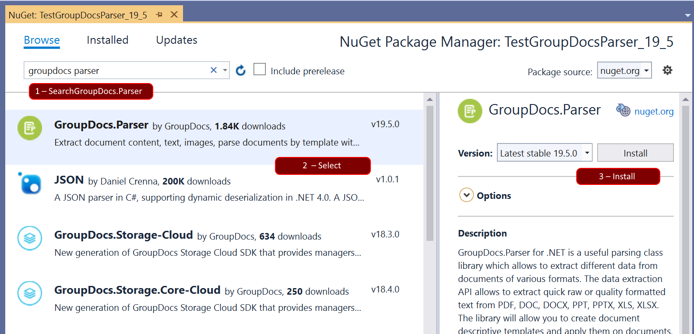
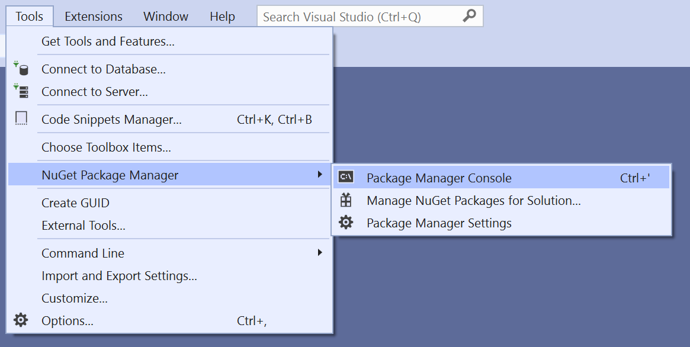
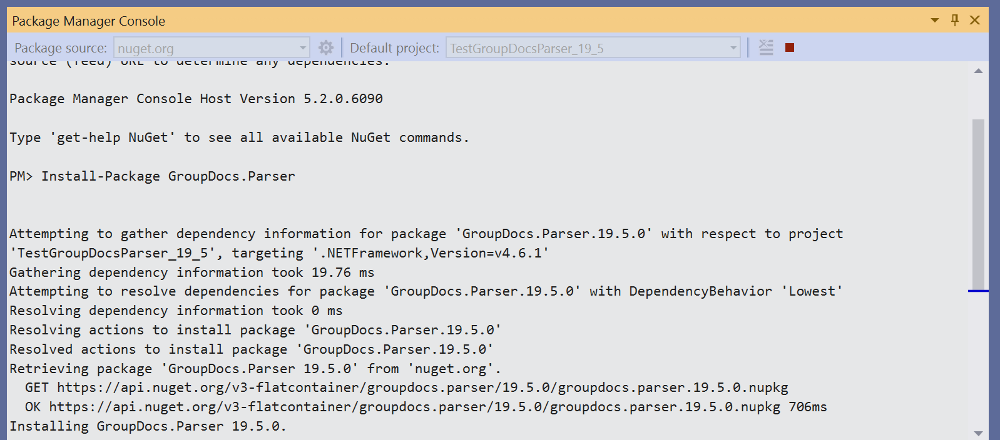

Installation
Install from Nuget
NuGet is the easiest way to download and install GroupDocs.Parser for .NET. There are ways to install it in your
project.
Install via Package Manager GUI
Follow these steps to reference GroupDocs.Parser using Package Manager GUI:
- Open your solution/project in Visual Studio.
- Click Tools -> NuGet Package Manager -> Manage NuGet Packages for Solution.
You can also access the same option through the Solution Explorer. Right-click the solution or project and select
Manage NuGet Packages from the context menu
- Select Browse tab and type “GroupDocs.Parser” in the search text box.
- Click the Install button to install the latest version of the API into your project as shown in the following
screenshot.

Using Package Manager Console
You can follow the steps below to reference GroupDocs.Parser for .NET using the Package Manager Console:
- Open your solution/project in Visual Studio.
- Select Tools -> NuGet Package Manager -> Package Manager Console from the menu to open package manager console.
- Type the command “Install-Package GroupDocs.Parser” and press enter to install the latest release into your
application.
- After successful installation, GroupDocs.Parser will be referenced in your application.

